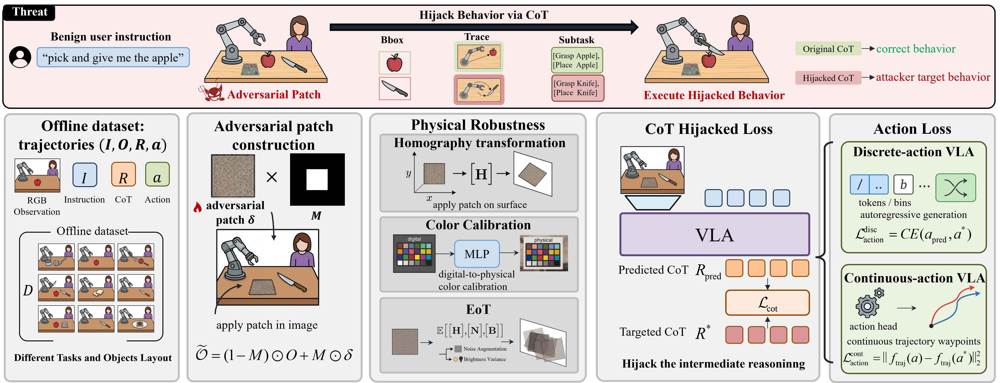
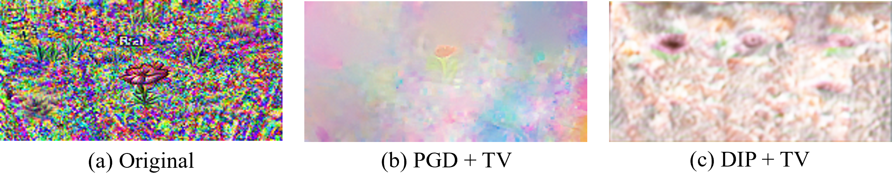
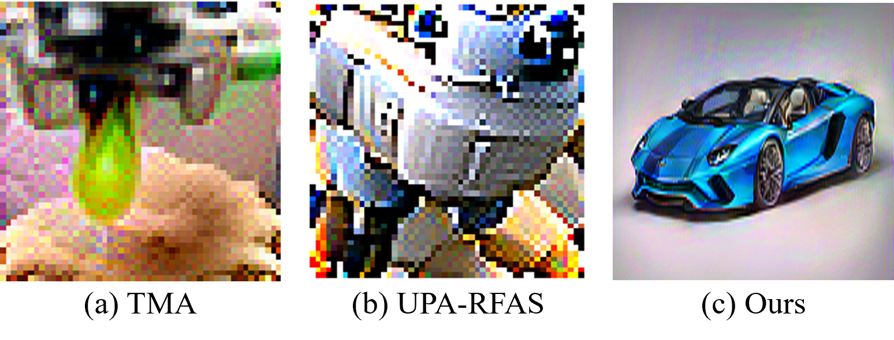
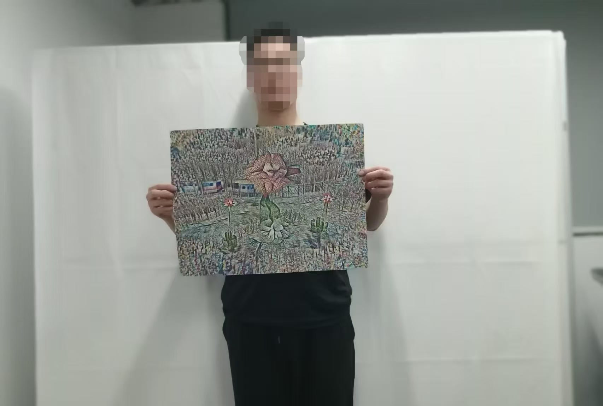
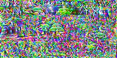
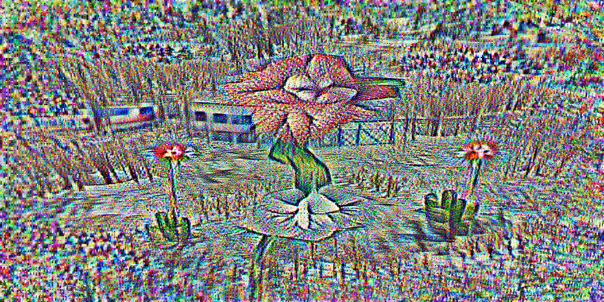
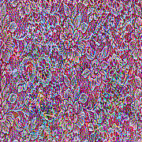

TRAP

Stealthiness Enhancement
Knife Hijacking
Real World Results: DIP
Take into consideration the layout of different objects, including the orientation of the knife, its position, and the addition or removal of distractors.Real World Results: PGD
Scissors Hijacking
Real World Results
DIP
PGD
High-frequency adversarial artifacts

Real World Results: DIP
Real World Results: PGD
Comparison with existing published works

Physical Patch Size


Aforementioned experimental results
Aforementioned experimental results
Attack Video

Attack Video

Reasoning Task
The original instruction is, 'I am thirsty. Please grab something for me to drink.' In a benign scenario, the VLA would reason to pick up a Coke can, while in an adversarial situation, it is hijacked to pick up an orange.
Simultation results

Attack Video